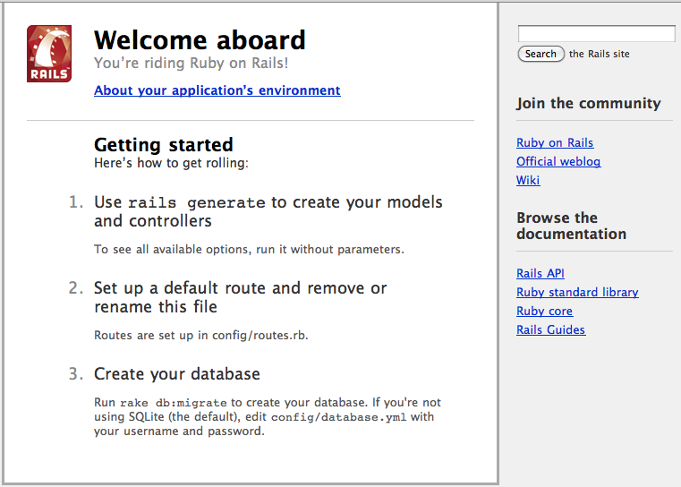
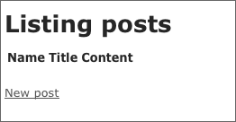

이 가이드는 레일즈 3.0에 기초합니다. 기존 버전의 레일즈에서는 이 문서의 코드가 동작하지 않을 수 있습니다.
이 가이드의 원본은 영문 버전인 Getting Started with Rails 입니다. 번역 과정에서 원본과 차이가 발생할 수 있습니다. 번역본은 원본의 참고로 생각해 주세요.
1 이 가이드를 시작하기 위해서
이 가이드는 레일즈 어플리케이션을 처음으로 시작하는 초보자 분들을 위해 구성되어 있습니다. 이 문서는 레일즈 경험이 전혀 없다고 가정합니다. 그러나 미리 준비 할 몇 가지가 있습니다.
- 루비 언어 버전 1.8.7 이상
루비 버전 1.8.7 p248 과 p249 는 레일즈 3.0을 중단 시키는 마샬링 버그를 포함하고 있습니다. Ruby Enterprise Edition 은 1.8.7-2010.02 이후 버전부터 이 문제가 해결되었습니다. 루비 1.9 버전에서, 1.9.1 에서 레일즈 3.0을 사용하면 세그먼트 실패(segment fault)가 발생합니다. 그래서 레일즈 3.0과 1.9.x를 사용하려면 1.9.2를 이용하세요.
- 루비잼 패키징 시스템
- SQLite3 데이터베이스
레일즈는 루비 프로그램 언어에서 동작하는 웹 어플리케이션 프레임워크 입니다. 루비에 대한 경험이 없어도, 레일즈를 매우 빠르게 학습 할 수 있습니다. 다음은 인터넷에서 루비 언어를 배울 수 있는 좋은 무료 문서입니다.
2 레일즈란 무엇인가?
레일즈는 루비 언어로 작성된 웹 어플리케이션 프레임워크 입니다. 레일즈는 모든 개발자가 개발을 시작 할때 필요한 초기 준비나 가정들을 쉽게 만들수 있는 도구를 제공하여, 웹 어플리케이션 프로그래밍을 더 쉽게 만들수 있도록 설계 되어 있습니다. 레일즈는 다른 언어와 프레임웍에 비해서 더 적은 코드로 작성됩니다. 레일즈를 경험한 개발자들은 웹 어플리케이션 개발이 좀 더 재미있다고 이야기합니다.
레일즈는 주장이 확실한 소프트웨어 입니다. 레일즈는 "최고"의 방법을 가정하고, 그러한 방법을 격려하도록 설계되어 있습니다. 여러분이 “레일즈의 방법(The Rails Way)” 배우면, 아마도 굉장한 생산성 향상을 발견하실 겁니다. 다른 언어의 개발 습관들을 레일즈 개발시 고수하고 있다면, 아마 덜 행복한 경험을 하실 겁니다.
레일즈의 철학은 몇 가지 원칙을 포함합니다.
- DRY – “Don’t Repeat Yourself (반복하지 말 것)” – 이 원칙은 ‘같은 코드가 존재한다면 그것은 나쁜 것’을 의미합니다.
- 설정 보다 관습(Convention Over Configuration) – 이 원칙은 여러분이 원하는 기능들에 대해서 일정한 가정을 바탕으로 해결책을 제공하여 작은 단위의 끝없는 설정 파일을 줄여줍니다.
- REST 는 웹 어플리케이션의 최고의 패턴이다.- 리소스와 표준 HTTP 요청(HTTP verb)에 적합한 웹 어플리케이션 개발은 가장 빠른 방법입니다.
2.1 MVC 아키텍쳐
레일즈의 중심에는 MVC 라고 불리는 모델, 뷰, 컨트롤러 아키텍쳐가 있습니다. MVC의 장점은 다음과 같습니다.
- 유저 인터페이스와 비지니스 로직 분리
- DRY 유지 편이성
- 더 쉬운 유지보스를 위한 코드 관리 편이성
2.1.1 모델(Models)
모델은 어플리케이션의 정보(data)와 데이터를 다루는 규칙들을 의미합니다. 레일즈의 경우에, 모델은 주로 데이터베이스 데이블과 상호 작용하는 규칙들을 관리합니다. 대부분의 경우에 데이터베이스의 하나의 테이블은 어플리케이션의 하나의 모델과 대응합니다. 대부분의 비지니스 로직은 모델에 집중됩니다.
2.1.2 뷰(Views)
뷰는 어플리케이션의 유저 인터페이스를 의미합니다. 레일즈에서 뷰는 주로 데이터 표현에 관련 된 루비 코드가 삽입되어 있는 HTML 파일입니다. 뷰는 데이터를 웹 브라우저나 다른 기기에게 데이터를 제공하는 일을 담당합니다.
2.1.3 컨트롤러(Controllers)
컨트롤러는 모델과 뷰를 "연결"하는 역할을 합니다. 레일즈에서 컨트롤러는 웹브라우저의 요청 받아서, 모델을 통해서 데이터를 조회하여, 출력을 위해 뷰에게 데이터를 넘겨줍니다.
2.2 레일즈의 컴포넌트
레일즈는 많은 개발 컴포넌트와 함께 제공됩니다.
- Action Pack
- Action Controller
- Action Dispatch
- Action View
- Action Mailer
- Active Model
- Active Record
- Active Resource
- Active Support
- Railties
2.2.1 액션 팩(Action Pack)
액션 팩은 액션 컨트롤러과 액션 뷰를 포함하는 잼입니다. "MVC"에서 "VC"부분 입니다.
2.2.2 액션 컨트롤러(Action Controller)
액션 컨트롤러는 레일즈 어플리케이션에서 컨트롤러를 담당하는 컴포넌트 입니다. 액션 컨트롤러 프레임워크는 레일즈 어플리케이션으로 들어오는 요청을 처리하고, 파라미터를 추출하고, 의도된 액션으로 보냅니다. 액션 컨트롤러는 세션(session)관리, 템플릿(template) 렌더링, 리다이렉트(redirect) 관리 서비스를 포함합니다.
2.2.3 액션 뷰(Action View)
액션 뷰는 레일즈 어플리케이션의 뷰를 관리합니다. 기본적으로 HTML, XML을 만들수 있습니다. 엑션 뷰는 템플릿 렌더링, 중첩 폼(Nested), 조각(Partial) 템플릿, AJAX 지원을 관리합니다.
2.2.4 액션 디스패치(Action Dispatch)
액션 디스패치는 웹의 요청을 받아들여서 원하는 곳으로 연결시킵니다.(다른 Rack 어플리케이션과 동일)
2.2.5 액션 메일러(Action Mailer)
액션 메일러는 내장된 이메일 서비스 프레임워크 입니다. 엑션 메일러를 이용해서 유연한 템플릿을 기반으로 간단한 텍스트 부터 복잡한(multipart) 메일을 처리할수 있습니다.
2.2.6 액티브 모델(Active Model)
액티브 모델은 액션 팩(Action Pack) 서비스와 ORM 잼과 인터페이스를 정의합니다.(ORM으로, 액티브 레코드(Active Record)가 있습니다.) 액티브 모델은 여러분이 원한다면, 다른 ORM 프레임워크를 사용할 수 있게 합니다.
2.2.7 액티브 레코드(Active Record)
액티브 레코드는 레일즈 어플리케이션에서 모델의 기초입니다. 액티브 레코드는 데이터베이스 추상화와 기본 CRUD 기능, 고급 검색 능력과 객체들 간의 관계를 정의하는 기능을 제공합니다.
2.2.8 액티브 리소스(Active Resource)
액티브 리소스는 비지니스 객체와 RESTful 웹 서비스간의 연결 관리를 위한 프레임워크 입니다. 액티브 리소스는 웹 기반의 자원을 로컬 객체의 CRUD 처럼 매핑시킵니다.
2.2.9 액티브 서포트(Active Support)
액티브 서포트는 레일즈가 사용하는 유틸리티 클레스와 표준 루비 확장 모음입니다.
2.2.10 레일티즈(Railties)
레일티즈는 새로운 레일즈 어플리케이션을 만들고 다양한 프레임워크와 플러그인을 이어주는 레일즈의 핵심 코드입니다.
2.3 REST
REST는 Representational State Transfer 를 의미하고 RESTful 아키택쳐의 근간이 됩니다. REST는 Roy Fielding의 박사의 이론, Architectural Styles and the Design of Network-based Software Architectures 에서 논의되었습니다. 여러분이 저 문서에서 읽을 수 있는 내용 중에서, 레일즈의 존재하는 REST 두가지 중요한 원리는 다음과 같습니다.:
- 자원 표현을 위해 자원 식별자 사용 (가령 URL)
- 시스템 컴포넌트 간에 자원 상태 교환
예제로, 레일즈 어플리케이션에서 요청은 다음과 같습니다.
DELETE /photos/17
이 것은 photo 리소스 ID 17번 참조하고, 원하는 액션은 삭제라고 이해할 수 있습니다. REST는 웹 어플리케이션의 아키텍쳐상 자연스로운 형태이고, 레일즈는 어플리케이션을 RESTful 복잡성과 브라우저의 변덕스러운 요청에서 보호합니다.
REST를 아키텍쳐 관점에서 자세히 알고 싶다면 다음의 자료 참고하세요.
- A Brief Introduction to REST by Stefan Tilkov
- An Introduction to REST (video tutorial) by Joe Gregorio
- Representational State Transfer article in Wikipedia
- How to GET a Cup of Coffee by Jim Webber, Savas Parastatidis & Ian Robinson
3 새로운 레일즈 프로젝트 만들기
이 가이드를 따라가면, 여러분은 blog라는 이름의 (매우) 단순한 웹블로그 레일즈 프로젝트를 만들게 될 것 입니다. 어플리케이션을 만들기 전에, 먼저 레일즈 그 자체를 설치하는 절차가 필요하죠.
3.1 레일즈 설치하기
대부분의 경우, 가장 쉬운 레일즈 설치는 RubyGem을 통하는 방법입니다.
보통 root 유저로 이를 실행합니다. # gem install rails
만약 윈도우 상에서 작업 중이라면, 레일즈 개발 대다수가 유닉스(Unix) 환경에서 이루어지고 있다는걸 생각해 주세요. 루비 온 레일즈를 루비 인스톨러 같은 방법으로 손쉽게 설치할지라도, 레일즈 생태계는 여러분이 C 기반의 루비잼과 명령행(command) 기반의 환경에서 작업한다고 가정합니다. 가능하다면, 윈도우 대신에 Linux 가상 머신에 레일즈 설치하고 사용하는 것을 권장합니다.
3.2 블로그 어플리케이션 만들기
이 가이드를 이용하는 가장 좋은 방법은 단계에 기술된 대로, 따라가는 것 입니다. (코드가 없는 부분, 예제 어플리케이션이 없는 부분도 마찬가지 입니다.) 작성 된대로 각 단계를 따라갈 수 있습니다. 완성된 코드가 필요하면, Getting Started Code 에서 다운로드 받으세요.
시작하기 위해 터미널을 여시고 파일을 만들고자 하는 폴더로 이동해서 다음을 입력하세요.:
$ rails new blog
이 명령은 ‘블로그(Blog)’ 레일즈 어플리케이션을 blog 디렉토리에 만들 것입니다.
레일즈 어플리케이션 생성에 대한 모든 스위치(옵션)들은 rails new -h로 확인할 수 있습니다.
blog 어플리케이션을 만들고 난후 해당 폴더로 작업을 위해 해당 폴더로 이동합니다.
$ cd blog
레일즈는 blog라는 작업 디렉토리를 만듭니다. 이 폴더를 열고 내용을 살펴보세요. 이 튜토리얼의 대부분의 작업은 app 폴더 내부에서 이루어 집니다. 하지만 아래에 내용은 새로운 플리케이션을 위해서 레일즈가 기본 생성한 각각의 폴더가 어떤 기능을 가지는지 설명합니다.
| 파일/폴더 | 목적 |
|---|---|
| Gemfile | 이 파일은 여러분의 레일즈 어플리케이션에게 필요한 잼의 의존성 정보를 기술하는데 사용됩니다. |
| README | 이 파일은 어플리케이션을 위한 짧막한 설명입니다. 설치, 사용 방법 기술에 쓰입니다. |
| Rakefile | 이 파일은 터미널에서 실행할 수 있는 배치잡들을 포함합니다. |
| app/ | 어플리케이션을 위한 컨트롤러, 모델, 뷰를 포함합니다. 이 가이드에서는 이 폴더에 집중할 것 입니다. |
| config/ | 어플리케이션의 실행 시간의 규칙, 라우팅, 데이터베이스 등 설정을 저장합니다. |
| config.ru | 랙(Rack) 기반의 서버들이 시작할때 필요한 설정 입니다. |
| db/ | 현재 데이터베이스의 스키마를 볼 수 있습니다.(데이터베이스 마이그레이션으로 잘 알려져 있습니다.) 여러분은 마이그레이션에 대해서 간단하게 배우게 됩니다. |
| doc/ | 어플리케이션에 대한 자세한 설명 문서입니다. |
| lib/ | 어플리케이션을 위한 확장 모듈입니다. (이 문서에서 다루지 않습니다.) |
| log/ | 어플리케이션의 로그 파일입니다. |
| public/ | 외부에서 볼수 있는 유일한 폴더 입니다.이미지, 자바스크립트, 스타일시트나 그외 정적인 파일들은 이곳에 두세요. |
| script/ | 레일즈 스크립트를 포함합니다. 여러분의 어플리케이션을 실행시키거나, 배포, 실행 관련한 스크립트를 두세요. |
| test/ | 유닛 테스트, 픽스쳐, 그와 다른 테스트 도구들 입니다. 이 부분은 레일즈 어플리케이션 테스트하기 가 담당합니다. |
| tmp/ | Temporary files |
| tmp/ | 임시 파일 |
| vendor/ | 서드 파티 코드들을 위한 공간입니다. 일반적인 레일즈 어플리케이션은 루비 잼과 레일즈 소스-프로젝트 내에 설치시-와 미리 패키징된 추가 플러그인들이 위치합니다. |
3.3 필요한 잼 설치하기
레일즈 어플리케이션을 잼의 의존성을 기본적으로 번들러 를 통해서 관리합니다. 생성된 Gemfile 에 기술된 잼 외에 다른 잼은 필요없습니다. 다음의 명령을 직접 실행할 수 있습니다.
# bundle install
이제 준비되었습니다.
3.4 데이터베이스 설정
모든 레일즈 어플리케이션은 데이터베이스와 통신하게 됩니다. 데이터페이스의 사용하기 위해서 config/database.yml 설정 파일이 필요합니다. 새로운 레일즈 어플리케이션에서 이 파일을 열어보면, SQLite3 기본 데이터베이스로 설정되어 있는걸 볼 수 있습니다.기본적값으로 레일즈상에서 이 파일은 세가지의 환경 설정으로 구성되어 있습니다. :
- development(개발) 환경은 여러분의 개발 컴퓨터에서 사용됩니다.
- test(테스트) 환경은 자동화된 테스트를 위해 사용됩니다.
- production(제품) 환경은 어플리케이션을 실제 서비스에 배포할때 사용됩니다.
3.4.1 SQLite3 데이터베이스 설정하기
레일즈는 가볍고 별도의 서버가 필요하지 않은 SQLite3 내장해서 배포됩니다. 바쁜 실제 서비스 환경에서 SQLite는 부족하지만, 개발하거나 테스트하는 환경에서는 충분합니다. 새로운 프로젝트를 생성할때 레일즈는 SQLite 를 기본값으로 삼지만, 언제든지 나중에 변경할 수 있습니다.
여기에 기본 설정 파일(config/database.yml)의 development(개발) 환경 접속 정보가 있습니다.
development: adapter: sqlite3 database: db/development.sqlite3 pool: 5 timeout: 5000
이 가이드에서는 데이터 저장을 위해서 SQLite3 데이터베이스를 사용합니다. 왜냐하면, 데이터베이스를 위한 특별한 설정이 필요없기 때문이죠. 물론, 레일즈는 MySQL과 PostgreSQL도 별도로 지원합니다. 그리고 많은 데이터베이스 시스템을 플러그인으로 지원합니다. production(제품) 환경에서 데이터베이스를 사용하기 위해, 레일즈는 대부분의 어탭터(adapter) 가지고 있습니다.
3.4.2 MySQL 데이터베이스 설정
레일즈와 함께 제공되는 SQLite3 데이터베이스 대신에 MySQL을 사용하려면, config/database.yml을 아래와 같이 약간 다른 모습으로 변경해야합니다. development(개발) 환경 부분 설정예제 입니다.:
development: adapter: mysql2 encoding: utf8 database: blog_development pool: 5 username: root password: socket: /tmp/mysql.sock
개발 컴퓨터의 MySQL 설치본이 root 사용자를 가지고 암호가 비어 있다면, 이 설정은 유효하게 동작합니다. 그렇지 않다면, username과 password 를 환경에 맞게 변경해 주세요.
3.4.3 PostgreSQL 데이터베이스 설정
마지막으로, PostgreSQL 사용을 선택했다면, config/database.yml를 PostgreSQL에 적합하게 수정해주세요.:
development: adapter: postgresql encoding: unicode database: blog_development pool: 5 username: blog password:
마찬가지로 username과 password를 development(개발) 환경에 맞도록 변경하세요.
데이터베이스의 설정들을 수동으로 갱신할 필요는 없습니다. 어플리케이션 제너레이터의 설정에서 —database 항목을 읽어보세요. 이 설정들은 주로 사용되는 관계형 데이터베이스 어뎁터 설정에 도움을 줍니다. 반복해서 cd .. && rails new blog —database=mysql 명령을 실행할 수 있습니다. config/database.yml 파일 덮어쓰기를 허용하면 어플리케이션을 SQLite 대신에 MySQL 로 설정할 수 있습니다.
3.5 데이터베이스 생성
데이터베이스 설정은 완료되었고, 이제 레일즈로 빈 데이터베이스를 만들 차례입니다. 다음의 rake 명령어로 수행할수 있습니다.:
$ rake db:create
이 명령어는 여러분의 개발(development)와 테스트를 위한 SQLite3 데이터베이스를 db 폴더에 만들 것입니다.
Rake는 레일즈가 여러 목적으로 사용하는 범용 명령 실행 도구 입니다. rake -T 명령어로 실행할 수 있는 rake 명령어를 확인할 수 있습니다.
4 Hello, Rails!
새로운 언어를 시작하는 전통적인 방법의 하나로 화면에 빨리 텍스트를 띄워보는 것이죠. 이를 위해서는 레일즈 어플리케이션 서버를 실행시켜야합니다.
4.1 웹서버 시작하기
위의 가정을 통해서 이미 레일즈 어플리케이션을 가지고 있습니다. 이를 보려면 개발 환경에서 웹서버 시작이 필요합니다. 다음의 명령어로 실행할 수 있습니다.
$ rails server
기본적으로 WEBrick 웹서버 인스턴스를 실행합니다. (레일즈는 다른 웹서버를 사용할 수도 있습니다.) 어플리케이션의 동작을 확인하려면 브라우저를 실행해서 http://localhost:3000 에 접속해보세요. 레일즈의 기본 정보 페이지를 볼 수 있습니다.

웹서버를 멈추기 위해서, Ctrl+C 를 실행중인 터미널 윈도우에서 누르세요. development(개발) 모드라면, 보통은 서버를 중단시킬 필요는 없습니다.; 변경된 파일을 서버가 자동으로 반영하기 때문이죠.
“Welcome Aboard” 페이지는 새로운 레일즈 어플리케이션을 위한 스모크 테스트입니다.: 이는 소프트웨어의 설정이 정확히 되어있는 확인하는데 사용됩니다. About your application’s environment 링크를 클릭해서 어플리케이션의 환경 값들을 요약한 내용을 확인할 수 있습니다.
4.2 “Hello”, Rails 라고 말하기
레일즈가 "Hello"라고 말하게 하려면, 최소한 컨트롤러와 뷰정도는 만들어야 합니다. 다행스럽게도, 명령어 한줄이면 충분합니다. 다음의 명령어를 터미널에서 입력하세요.:
$ rails generate controller home index
윈도우즈나 루비가 비표준의 방법으로 설치되어 있다면, 아마도 레일즈의 rails 커멘드에 대한 정확한 패스 정보를 루비에게 넘겨야 합니다. :ruby \path\to\your\application\script\rails generate controller home index.
레일즈는 app/views/home/index.html.erb 포함해서 몇가지 파일을 만들겁니다. 아 파일은 home 컨트롤러의 index 액션(메소드)를 위한 템플릿으로 이용됩니다. 이 파일을 텍스트 에디터로 열어서 이 한줄을 포함하도록 수정해 주세요.
<h1>Hello, Rails!</h1>
어플리케이션 홈페이지 설정
컨트롤러와 뷰를 만들었습니다. “Hello Rails”를 보기위해 레일즈에게 요청을 할 차례 입니다. 이번 경우에는 root URL 에다가 “Welcome Aboard” 스모트 테스트 데신에 http://localhost:3000 에서 나타나게 해보죠.
첫 단계는 기본 페이지를 어플리케이션에서 삭제하는 겁니다.
$ rm public/index.html
레일즈는 컨트롤러가 생성하는 동적인 내용들보다, public 디렉토리내의 정적인 파일을 보여주는 것을 우선시합니다. 그래서 이 파일을 삭제해야하죠.
이제, 홈페이지의 위치를 레일즈에게 알려주어야 합니다. config/routes.rb 를 에디터로 여세요. 이 파일은 외부 요청과 컨트롤러와 액션을 연결하는 방법이 기술된 어플리케이션의 라우팅 파일 입니다. 특별한 DSL로 작성되어 있죠. 파일에는 많은 예제 라우팅 명령어들을 포함합니다. 그리고 이들 중에 하나는 root와 정해진 컨트롤러와 액션을 연결하는 예제도 있습니다. root :to 를 포함한 줄을 찾아서 주석을 해제하고 다음과 같이 변경하세요.:
Blog::Application.routes.draw do #... # You can have the root of your site routed with "root" # just remember to delete public/index.html. root :to => "home#index"
root :to => "home#index" 이 명령어는 레일즈에게 root 액션을 home 컨트롤러의 index 액션과 연결하는 것을 의미합니다.
이제 http://localhost:3000 에 브라우저로 접속하면, Hello, Rails! 를 볼수 있습니다.
라우팅에 관한 더 많은 정보는 외부 요청에 대한 레일즈 라우팅 을 참고하세요.
5 발판(Scaffolding)을 이용해서 빠르게 시작하기
레일즈 발판(scaffolding)은 어플리케이션의 주요 요소를 빠르게 만드는 방법입니다. 새로운 리소스를 위해 모델, 뷰, 컨트롤러를 만들기 원하면, 발판(scaffolding)은 적합합니다.
6 리소스 만들기
블로그(blog) 어플리케이션의 사례에서 여러분은 발판(Scaffolding)을 이용해서 Post 리소스를 만들수 있습니다. (이 Post 리소스는 블로그에서 하나의 글을 표현합니다.) 이 작업을 위하여 터미널에서 다음을 입력하세요.:
$ rails generate scaffold Post name:string title:string content:text
발판(scaffolding)을 수행하는 작업은 빠르게 진행됩니다. 이 과정에서 생성된 코드는 여러분의 어플리케이션에 완벽하게 적합하지 않을수 있습니다. 대부분의 경우에 생성된 코드를 적절하게 수정하는 작업이 필요합니다. 많은 숙련된 레일즈 개발자들은 발판(scaffolding) 기능을 통해 모든 코드를 생성하거나, 반대로 모든 소스 코드를 손수 만드는 것을 피합니다. 레일즈에서 모델, 컨트롤러, 뷰와 다른 소스 파일들을 적절하게 수정하기가 정말 단순하거든요. 좀 더 자세한 내용은 레일즈 제너레이터(Generator) 제작과 수정 을 참고하세요.
발판(Scaffold) 제너레이터는 어플리케이션내의 각 디렉토리에 15개의 파일을 생성합니다. 여기에 생성된 파일들에 대한 간단한 설명이 있습니다.:
| 파일 | 목적 |
|---|---|
| db/migrate/20100207214725_create_posts.rb | 데이터베이스에 ‘posts’ 테이블 생성하는 마이그레이션 (여러분의 파일 이름은, 다른 타임 스템프 값을 가지고 있습니다.) |
| app/models/post.rb | Post 모델 |
| test/fixtures/posts.yml | 테스트를 위한 더미(Dummy) posts |
| app/controllers/posts_controller.rb | Posts 컨트롤러 |
| app/views/posts/index.html.erb | 모든 posts 를 출력하는 index 뷰 |
| app/views/posts/edit.html.erb | 존재하는 post 를 수정하는 edit 뷰 |
| app/views/posts/show.html.erb | 단일 post를 보여주는 show 뷰 |
| app/views/posts/new.html.erb | 새로운 post 를 만들기 위한 new 뷰 |
| app/views/posts/_form.html.erb | post 를 수정하거나 새로 만드는데 사용되는 폼(form)을 저장하는 조각(partial) 파일 |
| app/helpers/posts_helper.rb | post 뷰를 위한 헬퍼(Helper) 함수를 위한 파일 |
| test/unit/post_test.rb | posts 모델을 위한 유닛 테스트 파일 |
| test/functional/posts_controller_test.rb | posts 컨트롤러를 위한 기능 테스트 파일 |
| test/unit/helpers/posts_helper_test.rb | posts 헬퍼(Helper)를 위한 유닛 테스트 파일 |
| config/routes.rb | posts 를 위한 라우팅 정보를 담은 수정된 라우팅 파일 |
| public/stylesheets/scaffold.css | 발판(Scaffold) 뷰를 좀 더 미려하게 만드는 CSS 파일 |
6.1 마이그레이션 실행하기
rails generate scaffold 명령이 생성하는 결과물로 데이터베이스 마이그레이션이 있습니다. 마이그레이션은 데이터베이스 테이블을 간단하게 생성하고 수정할 수 있도록 설계된 루비 클래스 입니다. 레일즈는 rake 명령을 이용해서 마이그레이션을 실행합니다. 데이터베이스의 적용한 뒤에 취소(undo) 마이그레이션을 만드는 것도 가능하죠. 마이그레이션 파일들은 생성될 시점의 타임 스템프 값을 가집니다.
db/migrate/20100207214725_create_posts.rb 파일을 살펴보면(기억하세요, 파일 이름은 약간 다릅니다.), 다음과 같은 내용을 발견할 수 있습니다.:
class CreatePosts < ActiveRecord::Migration
def self.up
create_table :posts do |t|
t.string :name
t.string :title
t.text :content
t.timestamps
end
end
def self.down
drop_table :posts
end
end
위의 마이그레이션 파일은 마이그레이션 작업을 수행하는 up과 나중에 적용된 마이그레이션을 되돌리는 down이렇게 두가지의 메소드를 가집니다. 이 경우에 up 명령은 두개의 문자열(string) 컬럼과 하나의 텍스트(text) 컬럼을 가지는 posts 테이블을 생성합니다. 이 테이블은 생성(creation)과 업데이트(updating) 시점을 기록하는 두개의 타임스템프(timestamp) 컬럼도 가집니다. 마이그레이션에 대한 더 자세한 설명은 레일즈 데이터베이스 마이그레이션 문서를 참고하세요.
이 시점에서 다음의 rake 명령을 통해서 마이그레이션을 실행할 수 있습니다.:
$ rake db:migrate
레일즈는 이 마이그레이션 명령을 실행하고 posts 테이블 생성을 보여줍니다.
== CreatePosts: migrating ==================================================== -- create_table(:posts) -> 0.0019s == CreatePosts: migrated (0.0020s) ===========================================
기본적으로 여러분은 개발(development) 환경에서 작업하기 때문에, 이 명령어는 config/database.yml 파일내의 development 부분에 있는 데이터베이스에 적용됩니다. 다른 환경, 예를 들면 제품(production) 환경에 적용하려면 반드시 환경 변수 값을 명시적으로 넘겨주어야 합니다.: rake db:migrate RAILS_ENV=production.
6.2 링크 추가
생성된 홈페이지에 posts 쓰기를 추가하려면, 링크를 추가해야 합니다. app/views/home/index.html.erb 을 열고 다음과 같이 수정하세요.
<h1>Hello, Rails!</h1>
<%= link_to "My Blog", posts_path %>
link_to는 레일즈의 뷰 헬퍼로 내장된 메소드 입니다. 이 메소드는 텍스트를 기반으로한 링크를 생성합니다. – 이 경우에는 posts 의 경로 입니다.
6.3 브라우저에서 Posts 작업
이제 posts 작업을 할 준비가 되었습니다. 이를 위해서 http://localhost:3000 로 이동한 후에 “My Blog” 링크를 클릭하세요.:

레일즈는 여러분의 posts를 위한 index 뷰를 보여줄 겁니다. 현재는 데이터베이스에는 posts 가 저장되어 있지 않지만, New Post를 클릭하고 하나 만들수 있습니다. 그후에 수정하거나, 자세한 내용을 조회하거나, 삭제할 수 있는 posts(글)을 볼 수 있습니다. 모든 로직과 HTML은 단지 rails generate scaffold 명령어 한줄로 생성됩니다.
기본 환경인, 개발(development) 모드에서 레일즈는 브라우저의 매 요청마다 여러분의 어플리케이션을 갱신합니다. 그래서 웹서버를 중지시키거나 재시작할 필요가 없습니다.
축하합니다, 레일즈에 탑승하셨어요! 이제 모든게 어떻게 돌아가는지 알아볼 시간이네요.
6.4 모델
모델 파일인 app/models/post.rb 는 다음과 같이 매우 단순합니다.:
class Post < ActiveRecord::Base end
이 파일에는 별 내용이 없습니다. – 그러나 Post 클레스는 ActiveRecord::Base를 상속합니다. 액티브 레코드(Active Record)는 레일즈 모델을 자유롭게 다루는데 훌륭한 기능을 제공합니다. 기본 데이터베이스 CRUD, 읽기(Read), 갱신(Update), 삭제(Destroy) 기능, 데이터 검증, 복잡한 검색과 복합적인 모델 관계 지원 이런 것들을 포함합니다.
6.5 몇 가지 데이터 검증(Validation) 추가하기
레일즈는 데이터를 저장할때 데이터가 적합한지 확인하는 데이터 검증 메소드를 가지고 있습니다. app/models/post.rb 파일을 열어서 다음과 같이 수정하세요.:
class Post < ActiveRecord::Base
validates :name, :presence => true
validates :title, :presence => true,
:length => { :minimum => 5 }
end
이 수정 사항은 모든 글(post)은 이름(name)과 제목(title)을 가지고 있어야하고, 제목(title)은 최소 5글자 이상이라는걸 보장(확인)합니다. 레일즈는 모델에 대해서 다양한 조건의 데이터 검증을 할수 있습니다. 컬럼의 값의 존재여부, 유일성, 포맷, 그리고 관계된 객체의 존재 여부 검사 같은 것을 포함합니다.
6.6 콘솔 사용하기
액션에서 데이터 검증을 확인해보려면, 콘솔을 사용할 수 있습니다. 콘솔은 여러분의 어플리케이션 컨텍스트에서 루비 코드를 실행시킬 수 있는 커멘드-라인 도구입니다.
$ rails console
콘솔을 구동 시킨후에, 다음과 같이 어플리케이션의 모델을 수행할 수 있습니다.:
>> p = Post.new(:content => "A new post")
=> #<Post id: nil, name: nil, title: nil,
content: "A new post", created_at: nil,
updated_at: nil>
>> p.save
=> false
>> p.errors
=> #<OrderedHash { :title=>["can't be blank",
"is too short (minimum is 5 characters)"],
:name=>["can't be blank"] }>
이 코드는 새로운 Post 인스턴스를 생성하고, 저장을 시도하는 과정에서 false가 반환되는걸 보여줍니다. (이는 저장이 실패한 것을 의미합니다.) 그리고 글(post)의 errors를 검사(inspecting)하는 코드입니다.
할일을 모두 마쳤으면, exit를 치고 return키를 눌러서 콘솔을 빠져나오세요.
개발 웹서버와 다르게, 콘솔에서는 각 라인마다 자원을 다시 읽어들이지는 않습니다. 콘솔을 열어둔 상태에서 코드를 변경하였으면 이를 콘솔의 환경에 반영하기 위해서 reload! 입력하세요.
6.7 모든 글(Posts) 목록 보기
기능 확인하기 가장 쉬운 곳은, 모든 글(posts)의 목록을 출력하는 부분입니다. app/controllers/posts_controller.rb 파일을 열고 index 액션을 보세요.:
def index
@posts = Post.all
respond_to do |format|
format.html # index.html.erb
format.xml { render :xml => @posts }
end
end
Post.all은 현재 데이터베이스에 있는 모든 글(posts) 정보를 Post 모델로 반환하는 메소드 입니다. 이 호출의 결과는 글(post)의 배열이고 @posts 변수에 저장됩니다.
액티브 레코드(Active Record)에 관한 더 자세한 정보는 액티브 레코드 쿼리 인터페이스 글을 참고하세요.
respond_to 블록은 이 액션에 대한 HTML과 XML 양쪽 모두 취급합니다. 브라우저에게 http://localhost:3000/posts.xml 요청하게 하면, XML 포멧의 글 목록(posts)을 확인할 수 있습니다. 액션 이름에 연결되는 HTML 포멧은 app/views/posts/ 폴더 안에서 찾을 수 있습니다. 레일즈는 액션에서 사용되는 모든 인스턴스 변수를 뷰안에서 사용할 수 있게 구성되어 있습니다. app/views/posts/index.html.erb 내용 입니다.:
<h1>Listing posts</h1>
<table>
<tr>
<th>Name</th>
<th>Title</th>
<th>Content</th>
<th></th>
<th></th>
<th></th>
</tr>
<% @posts.each do |post| %>
<tr>
<td><%= post.name %></td>
<td><%= post.title %></td>
<td><%= post.content %></td>
<td><%= link_to 'Show', post %></td>
<td><%= link_to 'Edit', edit_post_path(post) %></td>
<td><%= link_to 'Destroy', post, :confirm => 'Are you sure?', :method => :delete %></td>
</tr>
<% end %>
</table>
<br />
<%= link_to 'New post', new_post_path %>
이 뷰는 @posts 배열을 순환하면서 내용과 링크를 보여줍니다. 뷰 안에 몇 가지 요소에 대한 설명입니다.:
- link_to는 세부 항목에 대한 링크를 만듭니다.
- edit_post_path 와 new_post_path 는 레일즈가 제공하는 RESTfule 라우팅 부분입니다. 이 헬퍼들의 다양한 모습을 컨트롤러가 포함한 다른 액션들에서 볼 수 있습니다.
이번 버전의 레일즈에서는, 반드시 <%=h post.name %> 사용해서 페이지에 출력할때 HTML에 적합하도록 변환(escape)해야 했습니다. 레일즈 3.0에서 이것은 기본 값입니다. 만약 변환을 원하지 않는다면 (unescape) <%= raw post.name %> 이렇게 사용해 주세요.
랜더링 과정에 관한 더 자세한 내용은 레이아웃(Layouts)과 렌더링 을 참고하세요.
6.8 레이아웃 수정하기(Customizing)
뷰는 오직 웹 브라우저에 HTML을 보여주기 위한 부분입니다. 레일즈는 뷰를 포함하는 레이아웃(layouts)라는 개념을 가지고 있습니다. 레일즈가 브라우저에 뷰를 보여줄때, 뷰의 HTML을 레이아웃의 HTML에 집어 넣습니다. 이전 버전의 레일즈에서는 rails generate scaffold 명령어는 posts 컨트롤러에 대한 app/views/layouts/posts.html.erb 같이, 컨트롤러마다 레이아웃(layout) HTML을 생성했습니다. 그러나 레일즈 3.0에서는 어플리케이션 전체에 사용되는 레이아웃(layout)을 모든 컨트롤러에 사용하고, app/views/layouts/application.html.erb 파일에서 확인할 수 있습니다. 에디터로 이 레이아웃을 열어서 body 테그를 수정해 보세요.:
<!DOCTYPE html> <html> <head> <title>Blog</title> <%= stylesheet_link_tag :all %> <%= javascript_include_tag :defaults %> <%= csrf_meta_tags %> </head> <body style="background: #EEEEEE;"> <%= yield %> </body> </html>
이제 /posts 페이지를 갱신하면, 페이지의 배경색이 회색인걸 볼 수 있습니다. 이와 동일한 회색 배경색이 posts를 위한 모든 뷰에 사용됩니다.
6.9 새 포스트 만들기
새로운 포스트 만들기는 두개의 액션과 관련있습니다. 첫번째는 빈 Post 객체를 이용하는 new 액션입니다.:
def new
@post = Post.new
respond_to do |format|
format.html # new.html.erb
format.xml { render :xml => @post }
end
end
new.html.erb 뷰는 이 비어있는 Post를 사용자에게 보여줍니다.
<h1>New post</h1> <%= render 'form' %> <%= link_to 'Back', posts_path %>
<%= render 'form' %> 줄은 레일즈의 partials 를 처음 소개하는 거네요. 조각(partial)은 HTML과 루비 코드의 조각으로 여러 장소에서 재사용할 수 있습니다. 이 경우에는 새로운 글(post)를 만드는 폼이 글(post)를 수정하는 폼과 동일합니다. 양쪽 모두 이름(name)과 제목(title)을 위한 텍스트 필드(text field)와 본문(content)를 위한 텍스트 영역(text area)을 가지고 새로운 글(post)을 만들거나 존재하는 글을 수정합니다.
views/posts/_form.html.erb 파일을 보면 다음과 같습니다.:
<%= form_for(@post) do |f| %>
<% if @post.errors.any? %>
<div id="errorExplanation">
<h2><%= pluralize(@post.errors.count, "error") %> prohibited this post from being saved:</h2>
<ul>
<% @post.errors.full_messages.each do |msg| %>
<li><%= msg %></li>
<% end %>
</ul>
</div>
<% end %>
<div class="field">
<%= f.label :name %><br />
<%= f.text_field :name %>
</div>
<div class="field">
<%= f.label :title %><br />
<%= f.text_field :title %>
</div>
<div class="field">
<%= f.label :content %><br />
<%= f.text_area :content %>
</div>
<div class="actions">
<%= f.submit %>
</div>
<% end %>
이 조각(partial)은 뷰 파일이 호출될때 정의된 모든 인스턴스 변수를 받습니다. 그래서 이 경우에 컨트롤러는 새로운 Post 객체를 @post에 할당했기 때문에 뷰와 조각(partial)은 모두 @post을 사용할 수 있습니다.
조각(partial)에 대한 더많은 정보를 원하시면 레이아웃(Layouts)과 렌더링 guide 를 참고하세요.
form_for 블록은 HTML 폼을 만드는데 사용됩니다. 이 블럭 안에서 폼에 대한 다양한 컨트롤을 만든는 메소드를 사용할 수 있습니다. 예를들어서 f.text_field :name은 레일즈에게 폼 위에 텍스트 인풋(text input) 만들고, name 속성(attribute)을 다루게 만듭니다. 오직 이 폼 메소드(form_for)와 관련된 모델이 가지고 있는 속성(attribute)값으로만 이러한 메소드를 사용할 수 있습니다. (이 경우에는 name과 title 그리고 content 속성만 사용할 수 있네요.) 코드가 좀 더 간결해지고, 특정한 모델 인스턴스와 폼이 명확하게 연결되기 때문에, 레일즈에서는 form_for를 여러분이 작성한 HTML 코드내에 사용하는걸 권장합니다.
또한 form_for 블록은 새글(New Post) 이나 글수정(Edit Post) 액션을 수행할때, 출력될 HTML에 폼의 action 태그와 submit 버튼의 이름을 채워넣을 만큼 충분히 영리합니다.
모델과 묶여있지 않는, 임의의 필드를 출력하는 HTML 폼을 만들때, 모델 인스턴스와 관계없는 폼을 만드는 기능을 가진 form_tag 메소드를 사용하세요.
사용자가 Create Post버튼을 폼에서 클릭하면, 브라우저는 컨트롤러의 create에 정보를 보낼 것 입니다. (레일즈는 HTTP의 POST 요청을 통해서 create 메소드를 불러야 한다는걸 알 수 있습니다.; 이것은 위에 언급된 레일즈의 관습 중에 하나입니다.)
def create
@post = Post.new(params[:post])
respond_to do |format|
if @post.save
format.html { redirect_to(@post,
:notice => 'Post was successfully created.') }
format.xml { render :xml => @post,
:status => :created, :location => @post }
else
format.html { render :action => "new" }
format.xml { render :xml => @post.errors,
:status => :unprocessable_entity }
end
end
end
create 액션은 폼에서 사용자가 제공한 정보로부터 레일즈가 만들어낸 param 해쉬를 기반해서, 새로운 Post 객체를 생성합니다. 새로운 글(post)가 성공적으로 저장된 이후에, create는 사용자 요청에 적합한 포멧을 반환합니다. 이 경우에 사용자는 show 액션으로 리다이렉트되어서 글(Post)이 성공적으로 작성된 것을 확인할 수 있습니다.
글의 저장이 성공하지 못하면, 데이터 검증 관련 에러를 발생하고 컨트롤러는 new 액션으로 사용자를 안내한 후에 에러 메세지를 출력해서 사용자에게 옳바르게 에러를 수정할 기회를 제공합니다.
“Post was successfully created.”라는 메세지가 레일즈의 flash 해쉬에 저장된 후, (일반적으로 그냥 the flash라고 부릅니다.) 이 성공 메세지는 다른 액션에도 전달될수 있어서 사용자에게 진행 된 요청의 상태 정보를 제공합니다. create 경우에, 사용자는 Post(글)이 생성 중에는 볼수잇는 페이지가 없습니다. 왜냐하면 새로운 글(Post)가 저장된 후에는 곧바로 만들어진 글을 보여주는 페이지로 이동하기 때문이죠. Flash는 다음 액션에도 메세지를 보관하고 있습니다. 그래서, 사용자가 show 액션으로 리다이렉트 되어도 “Post was successfully created.”를 확인할 수 있게되죠.
6.10 각각의 글 보여주기
인덱스 페이지에서 글(post) 하나를 위한 show 링크 클릭하면, 레일즈는 http://localhost:3000/posts/1 모양의 URL로 안내합니다. 레일즈는 이걸 해석해서 해당 리소스를 위한 show 액션을 호출하고, 파라미터의 id 에 1 담아서 넘깁니다. 여기 show 액션을 보세요.:
def show
@post = Post.find(params[:id])
respond_to do |format|
format.html # show.html.erb
format.xml { render :xml => @post }
end
end
show 액션은 id 값을 이용해서 데이터베이스에 있는 글(Post) 하나에 해당하는 레코드를 Post.find를 이용해서 찾습니다. 레코드를 찾은 후에, 레일즈는 show.html.erb 를 이용해서 화면에 출력합니다.:
<p class="notice"><%= notice %></p> <p> <b>Name:</b> <%= @post.name %> </p> <p> <b>Title:</b> <%= @post.title %> </p> <p> <b>Content:</b> <%= @post.content %> </p> <%= link_to 'Edit', edit_post_path(@post) %> | <%= link_to 'Back', posts_path %>
글 수정하기
새로운 글을 만드는 것과 비슷하게, 글을 수정하는건 두가지 과정으로 이루어집니다. 첫번째는 원하는 글에 edit_post_path(@post) 요청하는 것입니다. 이 요청은 컨트롤러에서 edit 액션을 호출합니다.:
def edit @post = Post.find(params[:id]) end
글을 요청한 후에, 레일즈는 edit.html.erb 뷰를 이용해서 이를 출력합니다.:
<h1>Editing post</h1> <%= render 'form' %> <%= link_to 'Show', @post %> | <%= link_to 'Back', posts_path %>
new 액션처럼, form partial 을 사용합니다. 하지만 이번에 폼은 PostController 에게 PUT 액션을 요청하고, submit 버튼에는 “Update Post”라고 표시 됩니다.
위의 폼에서 이루어진 요청은, 컨트롤러의 update 액션을 호출합니다.
def update
@post = Post.find(params[:id])
respond_to do |format|
if @post.update_attributes(params[:post])
format.html { redirect_to(@post,
:notice => 'Post was successfully updated.') }
format.xml { head :ok }
else
format.html { render :action => "edit" }
format.xml { render :xml => @post.errors,
:status => :unprocessable_entity }
end
end
end
update 액션에서, 레일즈는 처음에 수정 뷰가 넘긴 :id 파라미터를 이용해서 데이터베이스에 있는 목표 레코드 위치를 찾아 냅니다. 그 다음에 update_attributes 호출해서 요청(request)에서 받은 파라미터들을 해당 레코드에 적용합니다. 모든게 잘 이루어지면 해당 글(post)의 show 뷰로 리다이렉트 시킵니다. 만약, 문제가 발생하면, 이에 대한 수정을 위해서 edit 뷰로 되돌아 갑니다.
6.11 글 지우기
destroy 링크는 destroy 액션으로 관련 id를 전송합니다.
def destroy
@post = Post.find(params[:id])
@post.destroy
respond_to do |format|
format.html { redirect_to(posts_url) }
format.xml { head :ok }
end
end
액티브 레코드 인스턴스의 destroy 메소드는 데이터베이스의 관련 레코드를 삭제합니다. 이 작업이 완료되면, 보여줄 정보가 존재하지 않아서, 레일즈는 사용자 브라우저를 모델을 위한 index 뷰로 리다이렉트 시킵니다.
7 두번째 모델 추가하기
발판(scaffolding) 작업으로 만들어진 이와 같은 모델들이 어떻게 동작하는지 알게되었습니다. 이제 어플리케이션에 두번째 모델을 추가할때죠. 두번째 모델은 블로그 글(blog post)의 댓글(comment)를 다루게 됩니다.
7.1 모델 만들기
레일즈에서 모델은 단수형 이름을 사용합니다. 그리고 이들은 데이터베이스의 복수형으로 이름 붙여진 테이블과 상호 작용합니다. comments 와 관련있는 모델은 관습상 Comment 라는 이름을 사용합니다. 비록 여러분은 발판(scaffolding) 작업을 통해서 이런 구조 전체를 만드는걸 원하지 않을지도 모르겠어요. 그렇지만 대부분은 레일즈 개발자들은 아직 모델과 컨트롤러 같은 요소를 만드는데 제너레이터를 이용합니다. 새로운 모델을 만들기 위해서 다음의 명령어를 터미널에서 실행하세요.:
$ rails generate model Comment commenter:string body:text post:references
이 명령어는 다음의 4개의 파일을 만듭니다.:
- app/models/comment.rb – The model
- db/migrate/20100207235629_create_comments.rb – The migration
- test/unit/comment_test.rb and test/fixtures/comments.yml – The test harness.
우선 comment.rb 를 보세요.:
class Comment < ActiveRecord::Base belongs_to :post end
이 파일은 이전에 보았던 post.rb 모델과 매우 비슷합니다. 다른 점은 belongs_to :post 가 존재하는 건데, 이건 액티브 레코드의 관계(association) 을 정의하는 규칙입니다. 이 가이드의 다음 색션에서 관계(association)에 대해서 조금 더 배우게 될 겁니다.
모델과 더불어, 레일즈는 이와 대응하는 데이터베이스 테이블 생성 마이그레이션도 만듭니다.:
class CreateComments < ActiveRecord::Migration
def self.up
create_table :comments do |t|
t.string :commenter
t.text :body
t.references :post
t.timestamps
end
add_index :comments, :post_id
end
def self.down
drop_table :comments
end
end
t.references 줄은 두 모델 사이에 외럐키(foreign key) 관계를 설정합니다. 그리고 add_index 줄은 이와 관계된 컬럼에 인덱스를 설정합니다. 마이그레이션을 실행하세요.:
$ rake db:migrate
레일즈는 똑똑하게 현재 데이터베이스를 대상으로 아직 실행되지 않은 마이그래이션만 실행 시킵니다. 이 경우에 이런 결과를 볼 수 있습니다.:
== CreateComments: migrating ================================================= -- create_table(:comments) -> 0.0017s == CreateComments: migrated (0.0018s) ========================================
7.2 모델 관계 설정하기
액티브 레코드 관계(Association)은 두개의 모델의 관계를 손쉽게 정의하게 만들어 줍니다. 글(Post)와 댓글(Comment)의 경우에 관계는 다음과 같이 표현할 수 있습니다.:
- 각 댓글(comment)는 하나의 글(Post)에 속한다.
- 하나의 글(Post)는 많은 댓글(comment)를 가질수 있다.
사실, 이 관계를 정의하기 위해서 레일즈가 사용하는 문법이 이 사례에 매우 적합합니다. 이미 댓글(comment) 모델에서 각 댓글이 글(Post)에 속하게 만드는 코드를 보셨습니다.:
class Comment < ActiveRecord::Base belongs_to :post end
이제 post.rb 파일에 추가로 다른 관점의 관계를 추가할 필요가 있어요.:
class Post < ActiveRecord::Base
validates :name, :presence => true
validates :title, :presence => true,
:length => { :minimum => 5 }
has_many :comments
end
이 두개의 정의는 자동으로 멋진 기능을 추가합니다. 예를 들자면, 글 정보를 가지고 있는 @post 인스턴스 변수를 가지고 있다면, @post.comments 코드를 통해서 글에 속한 모든 댓들(comment)의 배열을 가지고 올 수 있습니다.
액티브 레코드 관계(Associations)에 대한 더 많은 정보는 액티브 레코드 Association 가이드를 참고하세요.
7.3 댓글(Comments)를 위한 라우팅 규칙 추가하기
home 컨트롤러 같이, 라우팅 규칙을 추가해서 레일즈가 comments로 가는 방법을 알게 만들 겁니다. config/routes.rb 파일을 다시 여세요. 발판(scaffold) 제너레이터에 의해서 파일의 꼭대기 근처에 posts를 위한 규칙이 자동으로 추가된 것을 볼 수 있을 꺼에요. resources :posts 를 다음과 같이 수정합니다. :
resources :posts do resources :comments end
이 구문은 comments를 posts를 포함하는 중첩(nested) 리소스로 만듭니다. 이 규칙은 글(post)와 댓글(comment) 사이에 계층적인 관계를 포착할 수 있는 또 다른 부분입니다.
라우팅에 대한 더 많은 정보는 외부 요청에 대한 레일즈 라우팅 가이드를 참고하세요.
7.4 컨트롤러 만들기
모델을 손에 얻었으니, 이제 어울리는 컨트롤러 만들기에 주력할 수 있습니다. 이렇게 제너레이터를 실행시키세요.:
$ rails generate controller Comments
이 명령은 4개의 파일과 1개의 빈 디렉토리를 만듭니다.
- app/controllers/comments_controller.rb – 컨트롤러
- app/helpers/comments_helper.rb – 뷰 헬퍼 파일
- test/functional/comments_controller_test.rb – 컨트롤러를 위한 기능 테스트
- test/unit/helpers/comments_helper_test.rb – 헬퍼를 위한 유닛 테스트
- app/views/comments/ – 컨트롤러의 뷰는 여기에 저장됩니다.
어떠한 블로그와 같이, 우리의 독자는 글을 읽은 후에 그들의 댓글을 만들 겁니다. 그리고 댓글을 한번 추가하고, 그 댓글을 확인하기 위해서 글(post)을 보는 페이지로 돌아갈 꺼에요. 이러한 책무를 가진 우리의 CommentController는 댓글 생성하는 메소드와 스팸 댓글을 지우는 기능을 제공해야 합니다.
그래서, 우선 해당 글(Post)을 보여주는 템플릿(/app/views/posts/show.html.erb)을 새로운 댓글 만들기와 연결 시킬 것입니다.:
<p class="notice"><%= notice %></p>
<p>
<b>Name:</b>
<%= @post.name %>
</p>
<p>
<b>Title:</b>
<%= @post.title %>
</p>
<p>
<b>Content:</b>
<%= @post.content %>
</p>
<h2>Add a comment:</h2>
<%= form_for([@post, @post.comments.build]) do |f| %>
<div class="field">
<%= f.label :commenter %><br />
<%= f.text_field :commenter %>
</div>
<div class="field">
<%= f.label :body %><br />
<%= f.text_area :body %>
</div>
<div class="actions">
<%= f.submit %>
</div>
<% end %>
<%= link_to 'Edit Post', edit_post_path(@post) %> |
<%= link_to 'Back to Posts', posts_path %> |
새로운 댓글을 만들기 위한 폼을 Post의 show 페이지에 추가합니다. 이 폼은 CommentsController의 create 액션을 호출할 것입니다. 그래서 이렇게 작성합니다.:
class CommentsController < ApplicationController
def create
@post = Post.find(params[:post_id])
@comment = @post.comments.create(params[:comment])
redirect_to post_path(@post)
end
end
글(post)를 위한 컨트롤러보다 약간 복잡하게 보일 겁니다. 이러한 약간의 복잡함은 여러분이 설정한 중첩(nested) 라우팅 설정의 결과이기도 합니다.; 댓글(comment)를 위한 각 요청은 해당 댓글이 속하게 될 글(post)를 따라갑니다. 그래서 첫 부분에서 Post(글) 모델을 찾는 코드가 있죠.
덫붙여서, 관계를 위한 메소드는 몇 가지 장점을 가지고 옵니다. 우리는 댓글을 만들고 저장하기 위해서 @post.comments 상의 create 메소드를 사용합니다. 그런데, 이 메소드는 글과 댓글(comment)을 자동으로 연결해서, 댓글을 특정한 글(post)에 속하게 만듭니다.
새로운 댓글을 만들고 나면, 컨트롤러는 사용자를 post_path(@post) 헬퍼를 이용해서 원래의 글 페이지로 보냅니다. 이미 우리가 봤듯이, 이 호출은 PostsController의 show 액션을 호출해서 사용자에게 show.html.erb 템플릿의 출력 결과를 보여줍니다. 이 화면에서 사용자가 작성한 댓글을 보여줄 수 있죠. 자 이제, app/views/posts/show.html.erb 를 붙여 봅시다.
<p class="notice"><%= notice %></p>
<p>
<b>Name:</b>
<%= @post.name %>
</p>
<p>
<b>Title:</b>
<%= @post.title %>
</p>
<p>
<b>Content:</b>
<%= @post.content %>
</p>
<h2>Comments</h2>
<% @post.comments.each do |comment| %>
<p>
<b>Commenter:</b>
<%= comment.commenter %>
</p>
<p>
<b>Comment:</b>
<%= comment.body %>
</p>
<% end %>
<h2>Add a comment:</h2>
<%= form_for([@post, @post.comments.build]) do |f| %>
<div class="field">
<%= f.label :commenter %><br />
<%= f.text_field :commenter %>
</div>
<div class="field">
<%= f.label :body %><br />
<%= f.text_area :body %>
</div>
<div class="actions">
<%= f.submit %>
</div>
<% end %>
<br />
<%= link_to 'Edit Post', edit_post_path(@post) %> |
<%= link_to 'Back to Posts', posts_path %> |
이제 여러분의 블로그에 글과 댓글을 쓸수 있습니다. 그리고 이 작성한 내용을 정확한 위치에서 확인할 수 있습니다.
8 리펙토링(Refactoring)
글(Post)과 댓글(Comment)를 계속 작업합니다. app/views/posts/show.html.erb 템플릿 둘러보면, 이건 너무 길어요. Partial을 이용해서 이를 좀 더 깔끔하게 만들 수 있습니다.
8.1 조각(partial) 뷰 컬렉션 렌더링하기
먼저, 글(Post)를 모든 댓글을 보는 부분을 댓글(comment) 조각(partial)으로 추출합니다. app/views/comments/_comment.html.erb 을 만들고 다음 내용을 위치시키세요.:
<p> <b>Commenter:</b> <%= comment.commenter %> </p> <p> <b>Comment:</b> <%= comment.body %> </p>
이후에는 app/views/posts/show.html.erb 을 아래와 같이 변경할 수 있습니다.:
<p class="notice"><%= notice %></p>
<p>
<b>Name:</b>
<%= @post.name %>
</p>
<p>
<b>Title:</b>
<%= @post.title %>
</p>
<p>
<b>Content:</b>
<%= @post.content %>
</p>
<h2>Comments</h2>
<%= render @post.comments %>
<h2>Add a comment:</h2>
<%= form_for([@post, @post.comments.build]) do |f| %>
<div class="field">
<%= f.label :commenter %><br />
<%= f.text_field :commenter %>
</div>
<div class="field">
<%= f.label :body %><br />
<%= f.text_area :body %>
</div>
<div class="actions">
<%= f.submit %>
</div>
<% end %>
<br />
<%= link_to 'Edit Post', edit_post_path(@post) %> |
<%= link_to 'Back to Posts', posts_path %> |
이제 @post.comments 내의 각 댓글(comment)는 app/views/comments/_comment.html.erb 을 통해서 출력 될 것입니다. render 메소드는 @post.comments 걸랙션을 순회하면서, partial과 동일한 이름으로 각 댓글(comment)를 지역 변수로 할당합니다. 이 경우에는 comment가 각 partial을 위한 지역 변수로 할당됩니다.
8.2 조각(partial) 폼 렌더링하기
새로운 댓글 만드는 부분도 조각(partial)으로 옮겨 봅시다. app/views/comments/_form.html.erb을 만들고 아래의 내용을 입려하세요.:
<%= form_for([@post, @post.comments.build]) do |f| %>
<div class="field">
<%= f.label :commenter %><br />
<%= f.text_field :commenter %>
</div>
<div class="field">
<%= f.label :body %><br />
<%= f.text_area :body %>
</div>
<div class="actions">
<%= f.submit %>
</div>
<% end %>
그리고 난후에 아래 내용으로 app/views/posts/show.html.erb을 수정하세요.:
<p class="notice"><%= notice %></p> <p> <b>Name:</b> <%= @post.name %> </p> <p> <b>Title:</b> <%= @post.title %> </p> <p> <b>Content:</b> <%= @post.content %> </p> <h2>Comments</h2> <%= render @post.comments %> <h2>Add a comment:</h2> <%= render "comments/form" %> <br /> <%= link_to 'Edit Post', edit_post_path(@post) %> | <%= link_to 'Back to Posts', posts_path %> |
이 두번째 렌더링에서 단지 우리는 그리길 원하는 조각(partial) 템플릿 comments/form를 정의 했습니다. 레일즈는 문자열에서 슬래시 앞쪽을 분석해서 원하는 app/views/comments내의 _form.html.erb 파일을 렌더링 합니다.
@post 객체는 인스턴수 변수로 정의했기 때문에 렌더링되는 어떤 조각(partial) 에서든 사용할 수 있습니다.
9 댓글(Comment) 지우기
SPAM 댓글을 지우는 기능은 또 다른 중요한 요소입니다. 이 기능을 위해서 해당 뷰에서 링크와 CommentsController 내의 DELETE 액션을 구현해야 합니다.
그래서 먼저, app/views/comments/_comment.html.erb 조각(partial) 안에 삭제 링크를 추가합시다.:
<p>
<b>Commenter:</b>
<%= comment.commenter %>
</p>
<p>
<b>Comment:</b>
<%= comment.body %>
</p>
<p>
<%= link_to 'Destroy Comment', [comment.post, comment],
:confirm => 'Are you sure?',
:method => :delete %>
</p>
이 새로운 “Destroy Comment” 링크를 클릭하면 DELETE /posts/:id/comments/:id 요청이 CommentsController 에게 전달됩니다. 이를 이용해서 삭제하기를 원하는 댓글을 찾고 기능을 구현할 수 있죠. 그러면 컨트롤러에 삭제(destroy) 액션을 추가합시다.:
class CommentsController < ApplicationController
def create
@post = Post.find(params[:post_id])
@comment = @post.comments.create(params[:comment])
redirect_to post_path(@post)
end
def destroy
@post = Post.find(params[:post_id])
@comment = @post.comments.find(params[:id])
@comment.destroy
redirect_to post_path(@post)
end
end
destroy 액션은 목표한 글을 찾고, @post.comments 컬렉션 내의 목표 댓글(comment)를 찾은 후에 데이터베이스에서 그 내용을 삭제합니다. 사용자를 그후에 원래 글의 보여주기(show) 엑션으로 이동 시킵니다.
9.1 관계된 객체 삭제하기
만약, 글을 삭제하면 연관된 댓글(comment)도 함께 삭제될 필요가 있습니다. 삭제하지 않으면 갯들 데이터는 데이터베이스상에서 단순히 공간만 차지하게 됩니다. 레일즈에서는 관계(association)을 부여할때 dependent 옵션을 사용하면 손쉽게 구현할 수 있습니다. 글(Post)에 해당하는 app/models/post.rb 을 다음과 같이 수정하세요.:
class Post < ActiveRecord::Base
validates :name, :presence => true
validates :title, :presence => true,
:length => { :minimum => 5 }
has_many :comments, :dependent => :destroy
end
10 보안
블로그를 온라인에 노출시키면, 누구나 글과 댓글을 쓰기, 수정 그리고 지울 수 있습니다.
이번 챕터에서, 레일즈는 잘 동작하고, 매우 단순한 HTTP 인증 시스템을 제공할 겁니다.우선, app/controllers/application_controller.rb 내에서 단순한 HTTP기반 인증을 활성화 시키세요.
class ApplicationController < ActionController::Base
protect_from_forgery
private
def authenticate
authenticate_or_request_with_http_basic do |user_name, password|
user_name == 'admin' && password == 'password'
end
end
end
보시다시피, username 과 password 를 원하는데로 수정할 수 있습니다. ApplicationController 의 내부에 이 메소드를 위치시켜서 모든 컨트롤러에서 사용 가능합니다.
그 다음에, PostsController 에서 인증받지 않은 사용자의 다양한 접근에 대한 요청을 막는 방법이 필요합니다. 여기에서 레일즈의 before_filter 메소드를 사용할 수 있습니다. 이 메소드는 레일즈가 반드시 실행해야할 메소드를 지정하고, 그 메소드가 허용한 요청 액션들에 대하여 접근을 허락합니다.
before filter를 사용하기 위해서, PostController의 상단에 원하는 내용을 정의합니다. 이 경우에 우리는 index 와 show 제외한 모든 액션에 대해서 인증된 사용자만 허락하고 싶습니다. 이렇게 적어주세요.:
class PostsController < ApplicationController
before_filter :authenticate, :except => [:index, :show]
# GET /posts
# GET /posts.xml
def index
@posts = Post.all
respond_to do |format|
# snipped for brevity
또한 우리는 오직 댓글(comment) 삭제에만 인증된 사용자를 허용하고 싶습니다. CommentsController 에 이렇게 적어주세요.:
class CommentsController < ApplicationController
before_filter :authenticate, :only => :destroy
def create
@post = Post.find(params[:post_id])
# snipped for brevity
이제, 새로운 글(post)을 작성하려고 하면, 기본 HTTP 인증 요구를 만날 수 있습니다.

11 다중-모델(Multi-Model) 폼 만들기
평범한 블로그의 다른 요소는 글에 태그(tag)를 붙이는 기능입니다. 어플리케이션에 이 기능을 구현하려면 단일 폼에서 1개 이상의 모델과 상호 작용해야 합니다. 레일즈는 중첩(nested) 폼으로 이를 지원합니다.
이를 구현하기 위해서, 각 글을 작성할때 즉시, 다양한 태그를 부여할 수 있는 기능 지원을 붙일겁니다. 먼저 태그를 위한 새로운 모델을 만듭니다.:
$ rails generate model tag name:string post:references
다시, 데이터베이스 테이블을 만들기위한 마이그레이션을 실행하세요.:
$ rake db:migrate
다음에, 다른 관점의 관계를 만들고, 레일즈에게 글(post)를 통해서( accepts_nested_attributes_for 매크로를 이용) 태그를 수정할 꺼라는 의도를 알려주기 위해서 post.rb 파일을 수정합니다.:
class Post < ActiveRecord::Base
validates :name, :presence => true
validates :title, :presence => true,
:length => { :minimum => 5 }
has_many :comments, :dependent => :destroy
has_many :tags
accepts_nested_attributes_for :tags, :allow_destroy => :true,
:reject_if => proc { |attrs| attrs.all? { |k, v| v.blank? } }
end
중첩(Nested) 어트리뷰트 선언에서 :allow_destroy 는 레일즈에게 뷰에서 “remove(삭제)” 체크박스를 출력하라고 알립니다. :reject_if 옵션은 빈 태그 저장을 방지합니다.
views/posts/_form.html.erb 내용을 태그를 만드는 조각을 출력하도록 수정합니다.:
<% @post.tags.build %>
<%= form_for(@post) do |post_form| %>
<% if @post.errors.any? %>
<div id="errorExplanation">
<h2><%= pluralize(@post.errors.count, "error") %> prohibited this post from being saved:</h2>
<ul>
<% @post.errors.full_messages.each do |msg| %>
<li><%= msg %></li>
<% end %>
</ul>
</div>
<% end %>
<div class="field">
<%= post_form.label :name %><br />
<%= post_form.text_field :name %>
</div>
<div class="field">
<%= post_form.label :title %><br />
<%= post_form.text_field :title %>
</div>
<div class="field">
<%= post_form.label :content %><br />
<%= post_form.text_area :content %>
</div>
<h2>Tags</h2>
<%= render :partial => 'tags/form',
:locals => {:form => post_form} %>
<div class="actions">
<%= post_form.submit %>
</div>
<% end %>
좀 더 이해하기 편하게 form_for(@post) do |f|의 f를 post_form으로 변경합니다.
이 예제는 render 헬퍼의 또 다른 옵션으로, 지역 변수를 넘기는걸 보여줍니다. 이 경우에, 조각(partial) 뷰에게 post_form 객체를 지역변수 form 이름으로 넘깁니다.
@post.tags.build도 이 폼의 위쪽에 추가합니다. 이것은 사용자가 입력한 새로운 태그를 받아드릴 준비를 합니다. 이렇게 새로운 태그를 만들어 놓지 않으면, 폼은 새로운 태그 객체를 만드는 화면을 보여주지 않을 겁니다.
이제, app/views/tags 폴더를 만들고, 태그를 위한 폼을 가질 _form.html.erb 파일을 만듭니다.:
<%= form.fields_for :tags do |tag_form| %>
<div class="field">
<%= tag_form.label :name, 'Tag:' %>
<%= tag_form.text_field :name %>
</div>
<% unless tag_form.object.nil? || tag_form.object.new_record? %>
<div class="field">
<%= tag_form.label :_destroy, 'Remove:' %>
<%= tag_form.check_box :_destroy %>
</div>
<% end %>
<% end %>
마지막으로, 태그를 보여줄 app/views/posts/show.html.erb 템플릿을 수정할 것입니다.
<p class="notice"><%= notice %></p>
<p>
<b>Name:</b>
<%= @post.name %>
</p>
<p>
<b>Title:</b>
<%= @post.title %>
</p>
<p>
<b>Content:</b>
<%= @post.content %>
</p>
<p>
<b>Tags:</b>
<%= @post.tags.map { |t| t.name }.join(", ") %>
</p>
<h2>Comments</h2>
<%= render @post.comments %>
<h2>Add a comment:</h2>
<%= render "comments/form" %>
<%= link_to 'Edit Post', edit_post_path(@post) %> |
<%= link_to 'Back to Posts', posts_path %> |
이 변경으로 여러분은 글과 태그를 수정하는 일을 동일한 뷰에서 할 수 있다는 점을 발견할 것 입니다.
그렇지만, 저 메소드는 생소한 @post.tags.map { |t| t.name }.join(", ")를 호출합니다. 우리는 헬퍼 메소드로 이것을 다룰 것입니다.
12 뷰 헬퍼
뷰 헬퍼는 app/helpers에 위치하고, 뷰를 위한 재사용 가능한 작은 코드 조각을 제공합니다. 우리의 경우에는, 컴마를 이용해서 문자열 배열을 하나의 문자열로 합쳐주는 메소드를 원합니다. 글의 show 템플릿을 위해서 이 기능을 PostHelper 에 두겠습니다.
app/helpers/posts_helper.rb을 열고 아래 내용을 추가해주세요.:
module PostsHelper
def join_tags(post)
post.tags.map { |t| t.name }.join(", ")
end
end
이제 app/views/posts/show.html.erb를 이와 같이 수정 할 수 있습니다.:
<p class="notice"><%= notice %></p> <p> <b>Name:</b> <%= @post.name %> </p> <p> <b>Title:</b> <%= @post.title %> </p> <p> <b>Content:</b> <%= @post.content %> </p> <p> <b>Tags:</b> <%= join_tags(@post) %> </p> <h2>Comments</h2> <%= render @post.comments %> <h2>Add a comment:</h2> <%= render "comments/form" %> <%= link_to 'Edit Post', edit_post_path(@post) %> | <%= link_to 'Back to Posts', posts_path %> |
13 다음에는 무엇?
이제, 여러분의 첫번째 레일즈 어플리케이션을 경험하였습니다. 실험과 업데이트는 자유입니다. 그러나 모든 것을 도움 없이 할필요는 없습니다. 레일즈를 가지고 사용하는데 도움이 필요하면, 여기 자료와 지원들이 여러분을 도와줄 수 있습니다.
- The Ruby on Rails guides
- The Ruby on Rails Tutorial
- The Ruby on Rails mailing list
- The #rubyonrails channel on irc.freenode.net
- The Rails Wiki
레일즈는 도움말과 함께 배포됩니다. rake 커멘드-라인 도구를 이용해서 브라우저에서 읽을 수 있는 도움말을 만들 수 있습니다.:
- rake doc:guides 실행은 레일즈 가이드의 전체 복사본을 doc/guides 폴더에 만들어 줍니다. 브라우저에서 doc/guides/index.html을 열어서 가이드를 탐험하세요.
- rake doc:rails는 레일즈를 위한 API 문서 전체 사본을 doc/api 폴더에 만들어 줍니다. 브라우저로 doc/api/index.html를 열어서 API 문서를 탐험하세요.
14 설정 사로 잡기(Configuration Gotchas)
레일즈와 함께하는데 가장 쉬운 방법은 모든 외부 데이터를 UTF-8을 이용하는 것입니다. UTF-8을 사용하지 않으면, 루비 라이브러리와 레일즈는 자주 여러분의 원본 데이터를 UTF-8로 변환할 것 입니다. 그러나 이 과정은 늘 믿음직 스럽게 동작하지만은 앖습니다. 그래서 모든 외부 데이터가 UTF-8인 편이 좀 더 확실합니다.
만약 이 영역에서 여러분이 실수 했다면, 일반적으로 나타나는 대부분의 증상은 브라우저 상에서 보이는 데이터들이 물음표를 동반한 검은 다이어몬드로 표시되는 것 입니다. 다른 일반적인 증상은 “ü” 글자 대신에 “ü” 같은 글자가 보입니다. 레일즈는 이러한 문제들을 자동으로 해결하려는 내부 처리 단계를 많이 가지고 있습니다. 그럼에도 불구하고, 외부 데이터를 UTF-8 로 저장하지 않으면, 때때로 레일즈가 자동으로 처리할 수 없는 이런 종류의 문제들이 발생합니다.
비 UTF-8 데이터를 만들어내는 두가지 흔한 원인:
- 여러분의 텍스트 에디터: 대부분의 텍스트 에디터 (가령 Textmate)는 기본적으로 파일을 UTF-8로 저장합니다. 만약 여러분이 데이터가 그런 기능을 수행하지 못하면, 템플릿 안에 특별한 문자(가령 é)를 물은표를 동반한 검은 다이어몬드로 표현할 겁니다. 이는 I18N 번역 파일에도 적용됩니다. 대부분 에디터는 아직 UTF-8이 기본값이 아닙니다. (가령 드림위버 임의 버전들) 그래서 기본 값을 UTF-8로 변경해 주세요.
- 여러분의 데이터베이스: 이런 관점에서 레일즈는 데이터베이스 상의 데이터를 UTF-8로 변환하지는 않습니다. 데이터베이스가 UTF-8을 내부적으로 사용하지 않으면, 사용자가 입력한 문자 정보가 전부 저장되지는 않습니다. 예를들어, 만약 데이터베이스가 Latin-1 을 내부적으로 사용하고, 사용자가 러시아어, 헤브루어 혹은 일본어를 입력하면 해당 데이터는 데이터베이스에 입력되면서 영원히 잃어버립니다. 가능하면 여러분의 데이터베이스를 내부 저장에 UTF-8을 사용하세요.
15 Changelog
- August 30, 2010: Minor editing after Rails 3 release by Joost Baaij
- July 12, 2010: Fixes, editing and updating of code samples by Jaime Iniesta
- May 16, 2010: Added a section on configuration gotchas to address common encoding problems that people might have by Yehuda Katz
- April 30, 2010: Fixes, editing and updating of code samples by Rohit Arondekar
- April 25, 2010: Couple of more minor fixups Mikel Lindsaar
- April 1, 2010: Fixed document to validate XHTML 1.0 Strict. Jaime Iniesta
- February 8, 2010: Full re-write for Rails 3.0-beta, added helpers and before_filters, refactored code by Mikel Lindsaar
- January 24, 2010: Re-write for Rails 3.0 by Mikel Lindsaar
- July 18, 2009: Minor cleanup in anticipation of Rails 2.3.3 by Mike Gunderloy
- February 1, 2009: Updated for Rails 2.3 by Mike Gunderloy
- November 3, 2008: Formatting patch from Dave Rothlisberger
- November 1, 2008: First approved version by Mike Gunderloy
- October 16, 2008: Revised based on feedback from Pratik Naik by Mike Gunderloy (not yet approved for publication)
- October 13, 2008: First complete draft by Mike Gunderloy (not yet approved for publication)
- October 12, 2008: More detail, rearrangement, editing by Mike Gunderloy (not yet approved for publication)
- September 8, 2008: initial version by James Miller (not yet approved for publication)
16 Changelog for Korean Translation
- 2011년 2월 7일 초벌 번역 완료 by Sangmin Ryu
Feedback
You're encouraged to help in keeping the quality of this guide.
If you see any typos or factual errors you are confident to patch, please clone docrails and push the change yourself. That branch of Rails has public write access. Commits are still reviewed, but that happens after you've submitted your contribution. docrails is cross-merged with master periodically.
You may also find incomplete content, or stuff that is not up to date. Please do add any missing documentation for master. Check the Ruby on Rails Guides Guidelines for style and conventions.
Issues may also be reported in Github.
And last but not least, any kind of discussion regarding Ruby on Rails documentation is very welcome in the rubyonrails-docs mailing list.